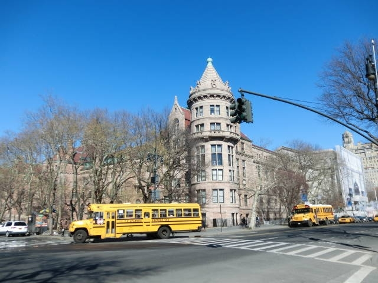
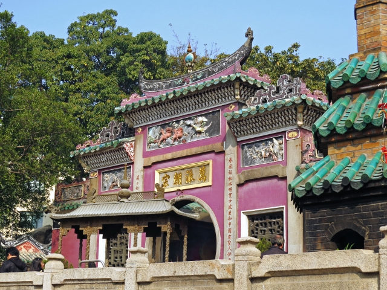

- HOME
- 学校の特色
アクセス
- 住所
- 〒064-0809
- 北海道札幌市中央区南9条西3丁目2-10
- TEL
- 011-123-4567
- FAX
- 011-123-4568
- sapporo-hise@xx.xx.jp
HISE's 5POINTS
-
英語力向上
英語の授業は、ネイティブスピーカー（ALT）と積極的にコミュニケーションをとることで、リスニング力やスピーキング力を養います。
また、英語でも自分の意見が言えるよう、英語で自分の意見を考え、まとめ、スピーチをする機会を設けています。そうすることで、ライティング力を身に付けることができます。さらに、他の人のスピーチを聞くことになるので、リスニング力も身に付けることができ、英語をバランスよく学習することができます。 -
姉妹校へ短期留学
2年生になると身に付けた英語力で海外の姉妹校に短期留学に挑戦できます。姉妹校はアメリカ、オーストラリア、ニュージーランド、中国、韓国、シンガポールにあります。積極的にコミュニケーションを取り、英語力だけではなく、その国の文化なども学べる機会となってます。
また、定期的にオンライン交流会も行ってます。毎回トークテーマを設け、テーマに沿ってディスカッションをしてます。
-
留学生受け入れ
逆に海外の生徒の受け入れも行ってます。受け入れ時は、レクリエーションをしたり、本校の紹介や日本の文化の紹介をします。どのような内容で受け入れるかクラスごとに自分たちで考え、海外の生徒におもてなしをします。
-
英語以外の言語・文化
本校では、英語以外（例：中国語、韓国語）を選択科目で学ぶことができます。言語と一緒にその国の文化や歴史なども学ぶことで、より国際情勢に関心を持つことが出来るカリキュラムとなっております。
-
飛世名物！？ディベート大会
今までは外国語の話でしたが、日本語でも自分の意見を発表する行事がディベート大会です。ディベートとは、2チームに分かれて、ある特定のテーマに対して賛成か反対かの意見を言い、第三者を説得する形の議論のことです。事前に賛成か反対かは決められてないので、下準備をしっかりして、本番にどちらの意見でも発表できるようにすることが求められます。毎年、決勝戦は盛り上がりを見せており、飛世高校の名物行事となってます。